Temel Fizik 2, Dönüşsel Kuvvet
Dönüşler, Dönme Direnci (Moment of Inertia)
Saat yönü tersi yönde bir dönüş düşünelim, $s$ kadar dönüş olduysa, orijine uzaklık $r$ ise, açısal mesafe [1, sf. 297]
$$ \theta = \frac{s}{r} $$
ki $\theta$ radyan. Ya da
$$ s = r \theta $$
Çemberin tamamı $2\pi$ rad (tam bir dönüş), meselâ 60 derece $\pi / 3$ rad. Çemberin çevresinin formülü $2\pi r$, eğer $\theta = \pi / 3$ rad ise, $s = \pi / 3 \cdot r $.
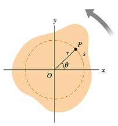
Açısal hızı bir $P$ noktasının teğetsel hızından yola çıkarak hesaplayabiliriz, bu noktanın teğetsel hızı sonsuz ufak $s$'nin zamana göre değişimi olacaktır, yani $v = ds / dt$,
$$ v = \frac{ds}{dt} = r \frac{d\theta}{dt} $$
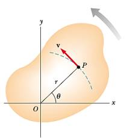
Elde edilen $d\theta / dt$ açısal değişimi gösteriyor, bu işte açısal hızdır, ona $\omega$ diyelim, o zaman teğetsel hızı açısal hız ile şöyle gösterebiliriz,
$$ v = r\omega $$
Formül diyor ki dönen bir katı objenin herhangi bir noktasının teğetsel hızı, o noktanın dönüş eksenine olan uzaklığı çarpı açısal hızına eşittir. O zaman, her ne kadar katı objenin her noktası aynı açısal hızla dönüyor olmasına rağmen her noktanın lineer hızı aynı değildir, çünkü $r$ her nokta için aynı değil. Üstteki formül dönüş merkezinden uzaklaştıkça hızın artacağını söylüyor. Teğetsel hızı hayal etmek için o noktada ayakta durabiliyor olsak yüzümüze çarpacak rüzgar hızını hayal edebiliriz.
İvmeyi de dahil edelim, açısal ivme ile teğetsel ivmenin bağlantısına bakalım, $v$'nin zamana göre türevini alırsak,
$$ a_t = \frac{dv}{dt} = r \frac{d\omega}{dt} $$
$$ a_t = r \alpha $$
Dönüşsel Kinetik Enerji
Dönmekte olan katı bir objenin kinetik enerjisini nasıl hesaplarız?
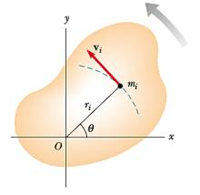
Objenin en ufak parçalarından başlayarak bunu yapmaya uğraşalım. Obje $z$ ekseni etrafında dönüyor olsun, ve açısal hızı $\omega$ diyelim. Obje içindeki her parçacık $i$'nin kütlesi $m_i$ diyelim, kinetik enerji bu parçacığın lineer hızına bağlıdır (objenin her parçacığı aynı açısal hızda döner ama farklı noktalarda lineer hız $v_i$ farklı olabilir, $v_i = r_i \omega$ üzerinden), o zaman her parçacık için kinetik enerji [1, sf. 299]
$$ K_i = \frac{1}{2} m_i v_i^2 $$
ile gösterilebilir. Tüm obje için,
$$ K_R = \sum_i K_i = \sum_i \frac{1}{2} m_i v_i^2 = \frac{1}{2} \sum_i m_i r_i^2 \omega^2 $$
Bu ifadede $\omega^2$'yi dışarı çekebiliriz, çünkü her parçacık için aynı,
$$ K_R = \frac{1}{2} \left( \sum_i m_i r_i^2 \right) \omega^2 $$
Parantez içindeki ifadeye bir isim verip değişken atayarak daha da işi basitleştirebiliriz, bu ifadeye dönme direnci (moment of inertia) ismi verilir,
$$ I \equiv \sum_i m_i r_i^2 $$
$I$'nin birimi $kg \cdot m^2$'dir, bu notasyonla nihai denklem
$$ K_R = \frac{1}{2} I \omega^2 $$
haline gelir.
Umarım lineer hareketin kinetik enerjisi $\frac{1}{2} m v^2$ ile dönüşsel hareketteki kinetik enerji $\frac{1}{2} I \omega^2$ arasındaki benzerlik dikkati çekmiştir. Lineerden dönüşsele geçerken / karşılaştırmalı düşünürken $I$ hep $m$ yerine geçer, böyle görülür. Dönme direnci $I$ aynen isminin çağrıştırdığı gibi bir kütlenin dönmeye olan gösterdiği dirençtir, aynen bir objenin kütlesinin lineer harekete olan gösterdiği direnç olması gibi.
Önemli bir nokta daha, $I$ formülündeki $r_i$ dikkati çekmiştir, her $m_i$ parçacığının aynı birim ağırlıkta olduğunu farzetsek bile objenin farklı noktalarında dönüş eksenine farklı uzaklıklar olabilir, yani bu uzaklıklar objenin şekline göre değişik olacaktır. Mesela bir dikdörtgensel plakayı orta noktasından döndürüyorsak ene ve boya olan uzaklıklar farklı olacaktır. Bu sebeple tahmin edebileceğimiz üzere her obje için farklı $I$ hesabı olmalıdır. Bu hesabın detayları için [1, sf. 301]'e bakılabilir. İki örnek obje için $I$ altta görülüyor.
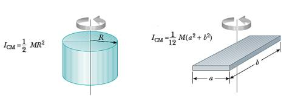
Tork (Torque)
Bir kuvvetin bir objeyi bir eksen etrafında döndürme kabiliyeti bir vektör büyüklüğü olan tork ile ölçülür. Dönme eksenine olan uzaklık burada önemli rol oynar, bir kapının kolu menteşeye olabildiği kadar uzaktır, çünkü mesafe arttıkça aynı kuvvet ile daha fazla dönme, daha çok tork elde edilir.
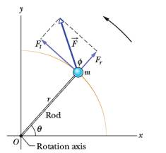
Tork her zaman dönme eksenine teğet olan kuvvet için hesaplanır, ve uzaklık, kol uzaklığı, kuvvetin uygulandığı noktada eksene olan uzaklıktır. Üstteki resimdeki tork $\tau$
$$ \tau = F \sin \phi = F d $$
ile hesaplanır, ki $d = r \sin\phi$ olarak tanımladık.
Dikkat, tork türetilebilecek bir kavram değildir, bir tanımdır. Dönme merkezine uzaklık çarpı kuvvet bazı kavramları biraraya getirmesi açısından faydalı, bu sebeple kullanılıyor. Tork kuvvet ile karıştırılmamalı. Kuvvet lineer harekette değişiklik yaratır, kuvvet dönüşsel harekette de değişiklik yaratır, ama bu tür değişimde hem kuvvet hem de dönüş merkezine olan kol uzaklığı aynı oranda rol oynar. Torkun birimi kuvvet çarpı uzunluk, yani Newton metredir. Diğer yandan yapılan iş (work) ve torkun birimleri aynıdır, ama bu iki kavram da birbirinden farklı.
Tork $\vec{\tau}$ üç boyutta
$$ \vec{\tau} = \vec{r} \times \vec{F} $$
olarak hesaplanabilir, bu durumda $\vec{\tau}$ vektörünün büyüklüğü hesaplanan tork olacaktır [4]. Çapraz çarpımdan biliyoruz ki
$$ |\tau| = | \vec{r} \times \vec{F} | = r F \sin\theta $$
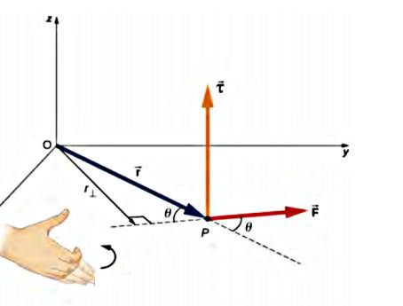
Örnek
Çocuk parklarında tahtıravallı vardır, diyelim bir uçta şişman bir çocuk biniyor, 10 Newton güç uyguluyor. Diğer yanda daha zayıf çocuk, o 5 Newton güç uyguluyor. Bu tahtıravallı hala dengede durabilir, eğer dönme noktasına şişman çocuk 1 metre, diğeri 2 metre uzakta oturuyorlarsa. Niye? Çünkü bu durumda iki tarafın uyguladığı tork birbirine eşit olacaktır.
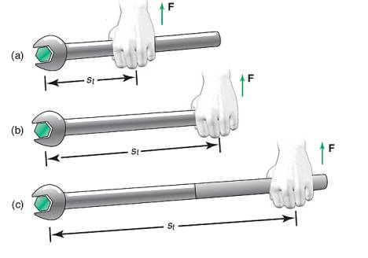
Şimdi kavramsal konulara birazdan daha yakından bakalım. Kavramsal olarak niye üstteki vida sıkma yöntemlerinden en alttaki (üçüncü) en kolay olanı? Bunu anlamak için alttaki şekle bakalım,
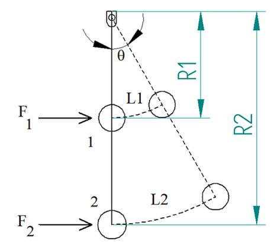
Görüldüğü gibi bize gereken vidadaki dönme için gereken bir $\theta$ var diyelim, bu $\theta$ açısı 1'inci noktada az bir mesafe 2'inci noktada daha fazla ile bir çembersel mesafeye sebep oluyor. Birinci mesafeyi daha fazla bir kuvvet ile ($F_1 > F_2$) aşmak lazım, aynı kuvvetin uygulandığı noktayı, mesafeyi arttırarak bir anlamda dış çembersel mesafeyi kuvvet ile değiş tokuş etmiş oluyoruz. Bu mekanizmanın nasıl işlediğini anlamak istiyoruz.
Vidanın kendi etrafındaki en ufak çemberi düşünelim, o çemberin bir $s$ parçası kadar dönmesi lazım, ve vidanın $F$ kuvveti ile dönmeye direndiğini düşünelim, o zaman yapılması gereken iş $F \cdot s$. Bu demektir ki o işi daha büyük bir çember üzerinden yaparsak, $s$ büyüyeceği için $F$'nin küçülmesinde problem yoktur, çünkü aynı $F \cdot s$ değerine ulaşmak için bir değer büyüdüğünde diğeri küçülebilir.
Burada anahtar kelime "yapılan iş" ve aslında çember etrafında yapılan bildiğimiz lineer iş. Eğer anahtarı çevirirken çember etrafında katedilen ufak lineer mesafeleri entegre etsek (kuvvet ile çarpıp toplasak) elde edilecek iş hesabından bahsediyoruz. Dönme kavramı sihirli farklı bir dünyada yaşamıyor, biz hala lineer bir iş yapıyoruz, kuvvet ile direk bir şeyi itiyoruz ya da çekiyoruz. Vida, anahtar kolu ile bu iş dönüşsel bir aksiyona çevriliyor.
Hesabı yapmak için önce çember uzunluğu kavramını görelim; iki boyutta tek düzlem üzerinde $r$ yarıçaplı $\theta$ açısı için katedilen ufak mesafe $s$ tanıdık $s = \theta r$ formülü ile hesaplanabiliyor.
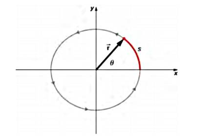
Eğer üç boyutta hesap yapmak isteseydik, bu uzayda herhangi bir yöne doğru gösterebilecek bir $\vec{r}$ için ufak bir numara kullanabiliriz, $\theta$'yi sayfadan bize doğru gösteren $\vec{r}$'ye dik olan bir vektör olarak düşünelim, vektör büyüklüğü eski skalar $\theta$'nin büyüklüğüne tekabül edecek, $\vec{s}$ hesabı için çapraz çarpım kullanırız,
$$ \vec{s} = \vec{\theta} \times \vec{r} \qquad (1) $$
Bu kullanımın iki boyut üzerinde hala geçerli olduğunu doğrulayabiliriz, [7]'de gördük ki
$$ |A \times B| = |A||B|\sin\phi $$
ki $\phi$ iki vektör arasındaki açıdır. Buradaki kullanımda $\vec{\theta}$ ve $\vec{r}$ dik, o zaman $\phi=90$,
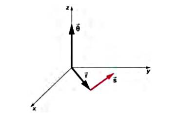
$$ |\vec{s}| = |\vec{\theta}| |\vec{r}| \sin(90) \implies s = \theta \cdot r $$
Bir önceki hesaba gelmiş olduk. Fakat çapraz çarpım formunun iyi tarafı üç boyutta kullanılabilmesi.
Şimdi üstteki hesabı ufak $\mathrm{d} \vec{s}$'ler için yapıp onları yapılan işi gezdiği çember parçası için entegre edeceğiz, ve bu hesabın bize tork hesabına götürdüğünü göreceğiz. (1) formülünün sonsuz ufak formunu türetelim,
$$ \mathrm{d} \vec{s} = \mathrm{d} (\vec{\theta} \times \vec{r} ) = \mathrm{d} \theta \times \vec{r} + \mathrm{d} \vec{r} \times \vec{\theta} = \mathrm{d} \theta \times \vec{r} $$
Basitleştirme mümkün oldu çünkü $\mathrm{d} \vec{r} = 0$, bu mantıklı onun zamana göre değişimi sözkonusu değil. Kuvveti uygularken somun anahtarını nereden tuttuğumuzu değiştirmiyoruz. Toplam yapılan iş için bahsettiğimiz entegrasyonu yapalım, kuvvet çarpı mesafe, yani $\mathrm{d} \vec{s}$, ve bunu tüm $\mathrm{d} \vec{s}$'ler için topluyoruz,
$$ W = \int \vec{F} \cdot \mathrm{d} \vec{s} = \int \vec{F} \cdot (\mathrm{d} \vec{\theta} \times \vec{r}) = \int \mathrm{d} \vec{\theta} \cdot (\vec{r} \times \vec{F}) $$
Son geçişi yapmak mümkün oldu çünkü bilinen bir eşitliğe göre $\vec{a} \cdot (\vec{b} \times \vec{c}) = \vec{b} \cdot (\vec{c} \times \vec{a})$
Son formülde bir $\vec{r} \times \vec{F}$ büyüklüğü var, bu tork hesabıdır! O zaman
$$ W = \int \vec{\tau} \cdot \mathrm{d} \vec{\theta} $$
diyebiliriz [4]. Yani bir kol çevirmekle yapılan toplam iş o işin gezdiği açı boyunca uygulanan torkların toplamına eşittir. Tork ise kol uzunluğu ile direk bağlantılı olduğu için daha büyük $\vec{r}$ daha fazla yapılan iş demek olacaktır!
Not: Bazı kaynaklarda, mesela yapısal mekanik (structural mechanics) alanında, uzaklık çarpı kuvvet büyüklüğü "moment" olarak ta geçiyor olabilir.
Açısal Hız (Angular Velocity)
Bir katı gövdenin herhangi bir eksen üzerinde döndüğünü düşünelim. Bu kütlenin bizim önceden sabitlediğimiz bir eksen sistemi olabilir, ama o eksenin herhangi bir kolu etrafında olması şart değil bu dönmenin, herhangi bir eksen.
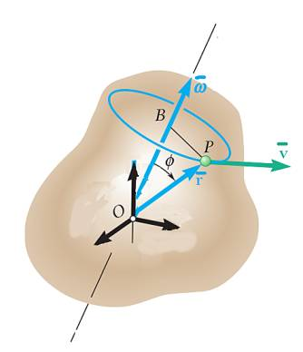
Üstteki resimde [8, sf. 920] eksen $\bar{w}$ vektörü etrafında olarak gösterildi, ve açısal hızın büyüklüğü ise $\bar{w}$ vektörünün büyüklüğüne eşit, yani $|\bar{w}|$. Açısal hız en basit halde alttaki şekilde hareketle anlaşılabilir, $\theta$ açısının katettiği çembersel mesafe $r\theta$'dir, eğer zamansal $\theta(t)$ biliniyorsa, $\omega = \dot{\theta}$ bize açısal hızı, ve $v = r\omega$ ise teğetsel hız $v$'yi verir.
Üç boyutlu ortamda $v$ ve $r$ iki üstteki resimde görüldüğü üzere birer vektör olur, bu durumda açısal hız $v$'yi, daha doğrusu $\bar{v}$ vektörünü hesaplamanın bir diğer yolu,
$$ \bar{v} = \bar{\omega} \times \bar{r} $$
çapraz çarpımıdır. Bu nasıl oldu? Yine iki üstteki resme bakarsak hız için önce bize yarıçap lazım, semboller karışmasın artık yarıçap $r$ değil, $\bar{r}$ vektörü direk parçacığın yerine işaret ediyor, yarıçap $BP$ çizgisi. O çizginin uzunluğu [6, sf. 10] ($r$ değerini $\bar{r}$'nin uzunluğu olarak alalım) şu formül değil mi? $r\sin\phi$. Evet. O zaman $\omega$ açısal hızı ile çarparsak, açısal hız vektörü büyüklüğünü
$$ |\bar{v}| = r \sin\phi \omega $$
Bu bir büyüklük tabii, hala vektörsel değil. Peki bu büyüklüğü bir vektöre nasıl çeviririz? Açısal hızın yönünü birim vektör olarak kullansak? Evet, bu yönün her zaman $\bar{r}$ ve $\bar{\omega}$ vektörlerinin oluşturduğu düzleme dik olacağını biliyoruz, bu bize çapraz çarpım işlemini hatırlatmalı, o zaman
$$ \bar{v} = r \sin\phi \omega \left( \frac{\bar{\omega} \times \bar{r}}{| \bar{\omega} \times \bar{r} |} \right) $$
Daha basitleştirme yapmak mümkün, [7]'den hatırlarsak, $|\bar{\omega} \times \bar{r} | = \omega r \sin\phi$, üstte yerine koyarsak,
$$ = r \sin\phi \omega \left( \frac{\bar{\omega} \times \bar{r}}{\omega r \sin\phi} \right) $$
$$ = \bar{\omega} \times \vec{r} $$
Peki $\bar{\omega} \times \vec{r}$ formülünden $\vec{v}$'yi geri elde etmek mümkün mü?
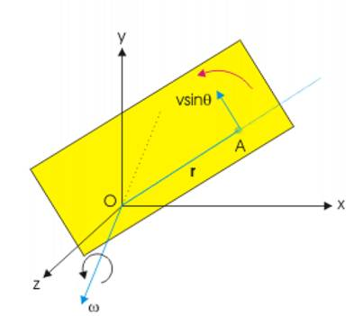
Üstteki resme uygun durumlar için, $\bar{\omega}$ parçacık $\vec{r}$'sinin oluşturduğu çemberin düzleminden yukarı çıkıyor,
$$ \bar{v} = \bar{\omega} \times \vec{r} $$
İki tarafı soldan $\bar{r}$ ile çapraz çarpalım,
$$ \bar{r} \times \bar{v} = \bar{r} \times (\bar{\omega} \times \vec{r}) $$
Sağ taraf üzerinde "BAC-CAB açılımı" denen tekniği uygulayabiliriz [11]
Buna göre [9]
$$ = \bar{\omega} (\bar{r} \cdot \bar{r}) - \bar{r}(\bar{r} \cdot \bar{\omega}) $$
$\bar{r}$ ve $\bar{\omega}$ birbirine dik olduğuna göre noktasal çarpımları sıfırdır. $|\bar{r}|^2 = \bar{r} \cdot \bar{r}$, o zaman
$$ \bar{r} \times \bar{v} = \bar{\omega} |\vec{r}|^2 $$
$$ \bar{\omega} = \frac{\bar{r} \times \bar{v}}{|\vec{r}|^2} $$
Açısal Momentum
Bir parçacığın açısal momentumu onun lineer momentumuna benzer şekilde hesaplanır, lineer durumda $m \vec{v}$ hesabını yapıyoruz. Açısal durumda kütle $m$ yerine dönme direnci $I$ kullanılacaktır, hız ise açısal hız $\vec{\omega}$ olacaktır. Açısal momentum $\vec{L}$,
$$ \vec{L} = I \vec{\omega} $$
$\vec{L}$ ve $\vec{\omega}$'nin aynı yöne işaret ettiğine dikkat. Bir parçacık için $I = r^2 m$ olur, $\vec{\omega} = (\vec{r} \times \vec{v}) / r^2$ biraz önce gördüğümüz gibi. O zaman
$$ L = (r^2 m) \left( \frac{\vec{r} \times \vec{v}}{r^2} \right) $$
$$ = m (\vec{r} \times \vec{v}) $$
$$ = \vec{r} \times m\vec{v} $$
$m\vec{v}$ ifadesi cogunlukla $\vec{p}$ ile gosterilir [5], yani
$$ L = \vec{r} \times \vec{p} $$
Aynen momentumun zamansal türevinin bir lineer kuvvet sonucunu vermesi gibi açısal momentumun zamansal türevi tork olacaktır [10, sf. 90]. Vektör işaretini yazmadan,
$$ \dot{L} = \frac{\mathrm{d} }{\mathrm{d} t} (r \times p) = (\dot{r} \times p) + (r \times \dot{p}) $$
Bir numara yapalım, hızı $v = \frac{\mathrm{d} r}{\mathrm{d} t} = \dot{r}$ olarak ta gösterebiliriz, çünkü $r$'nin zamansal değişimi hızdır, bu durumda üstte eşitliğin sağ tarafındaki $p$ yerine $m\dot{r}$ koyabiliriz, ve bakıyoruz ki $\dot{r}$ ile $m\dot{r}$ gibi iki paralel vektörün çapraz çarpımını alıyoruz, bu tür bir çarpım sıfıra eşittir, iptal olur. Ayrıca $\dot{p}$ yerine parçacık üstüne etki eden tüm kuvvetleri alırsak, $F$ diyelim, yeni denklem,
$$ \dot{L} = T = r \times F $$
olacaktır. $T$ parçacığa etki eden net tork olarak isimlendirilebilir.
Soru
Ufak bir yapışkan topun $xy$ düzleminde dönebilen, başta hareketsiz bir plağa $v$ hızında fırlatıldığını düşünelim [10, sf. 96], plak okuyucuya doğru çıkan $z$ düzlemi etrafında dönüyor olacak, dönüşte hiçbir sürtünme yok, bu durumda çarpmadan ortaya çıkan momentum muhafaza edilecek. Çarpma sonrası top ve plak beraber dönecekler, bu dönüş hızı $\omega$'yi bulun.
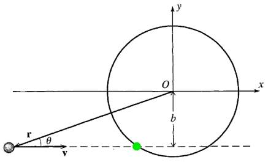
Cevap
Çarpma öncesi plağın sıfır momentumu var, topun ise $l = r \times p$. Burada $r$ orijine $O$'ya göre tam çarpışma noktasına olan uzaklık, o nokta yeşille işaretli, ve $b$. İki boyutta baktığımız için vektörelden skalar forma geçebiliriz, o zaman $r \times p = r (mv) \sin \theta = m v b$.
Çarpışma sonrası top plağa yapışmış halde, ağırlık artmış olacak, transfer edilen momentum her iki kütleyi hesaba katılacak şekilde alınmalı, ve açısal hızı onun üzerinden hesaplıyoruz, $L = I \omega$ formülünü hatırlayalım, $L$ transfer edildi onu biliyoruz, $I$ hesabında top için $mR^2$, plak için $\frac{1}{2} M R^2$, toplam $I = (m+M/2) R^2$, demek ki
$$ m v b = (m + M/2) R^2 \omega $$
Yer değiştirince
$$ \omega = \frac{m}{m + M/2} \cdot \frac{vb}{R^2} $$
Kaynaklar
[1] Resnick, Fundamentals of Physics, 8th Ed
[2] Heuvel, Pool Hall Lessons: Fast, Accurate Collision Detection Between Circles or Spheres, https://www.gamasutra.com/view/feature/131424/pool_hall_lessons_fast_accurate_.php?print=1
[3] Wikipedia, Elastic collision, https://en.wikipedia.org/wiki/Elastic_collision
[4] Clark, Physics 121, General Physics I, Muhlenberg College, https://phys.libretexts.org/Courses/Muhlenberg_College/MC%3A_Physics_121_-_General_Physics_I
[5] Wikipedia, Angular Momentum https://en.wikipedia.org/wiki/Angular_momentum
[6] Schaub, Analytical Mechanics of Space Systems
[7] Bayramlı, Cok Degiskenli Calculus, Ders 2
[8] Beer, Vector Mechanics for Engnineers
[9] Stackexchange, https://physics.stackexchange.com/questions/292822/how-to-derive-the-formula-for-angular-velocity-in-three-dimensions
[10] Taylor, Classical Mechanics
[11] Bayramlı, Cok Degiskenli Calculus, Ders 3